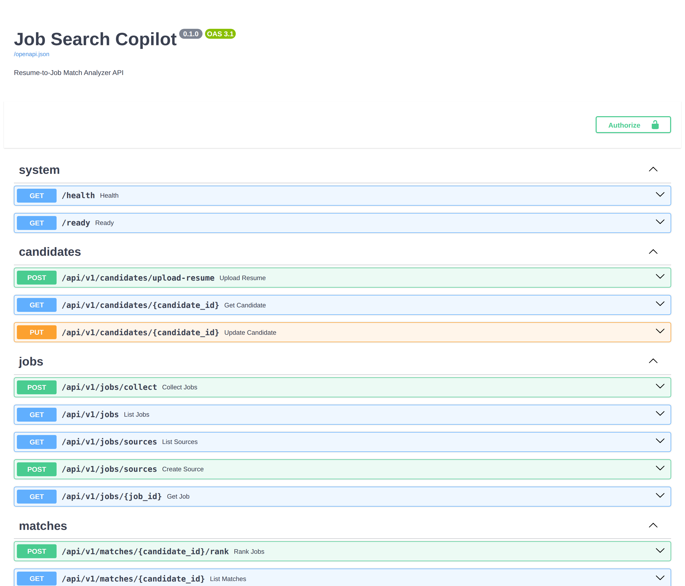
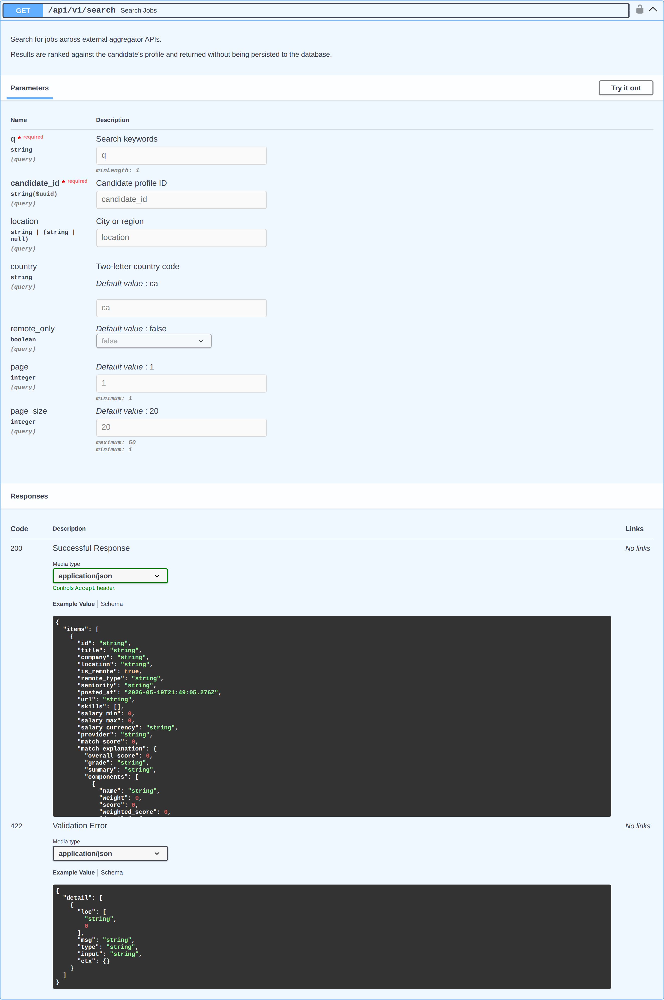

Job Search Copilot
Resume-to-job matcher with hybrid scoring and explanations
Overview
I was tired of the usual problem with job hunting: the same postings show up on five different sites, most of them aren't a real fit for my resume, and the sites themselves do a mediocre job of ranking them. Job Search Copilot is the matcher I wanted. It pulls postings from Greenhouse, Lever, company career pages, and a couple of aggregators, normalizes the job data, parses my resume into a structured profile, and ranks each job against that profile with an explanation for why it matches or doesn't. It focuses on Edmonton and Calgary software postings, but nothing about the pipeline is region-locked.
Technology Stack
Core
- Python 3.12
- FastAPI
- Pydantic v2
- Docker Compose
Data
- PostgreSQL 16
- pgvector
- SQLAlchemy 2 (async)
- Alembic
LLM & Ingestion
- OpenAI text-embedding-3-small
- OpenAI gpt-4o-mini
- httpx (async)
- BeautifulSoup / selectolax
Architecture & Design Choices
There are two ingestion pipelines. The stored one persists jobs from sources that allow it — Greenhouse and Lever. The ephemeral one runs at query time, caches results in memory with a short TTL, and never writes to disk. The split exists because one of the sources I wanted to use is a job aggregator whose terms of service don't allow storing scraped data. Splitting lets me use it legally. Both paths share the same fetcher, normalizer, embedding, and ranking code underneath.
I designed the system around a ~$5/month budget. There's no runtime meter enforcing it — the budget shows up in the weight choices. Scoring every job with an LLM was off the table, so the ranking pipeline leans on deterministic rules: skill coverage (25%), title match (15%), seniority distance (10%), location fit (10%). Those rules cost nothing to run. 60% of the final score comes from them, and only the remaining 40% semantic-similarity portion actually touches an embedding. That weight split is what keeps the matcher cheap enough to run continuously instead of in occasional batches.
The obvious next step is an auto-apply bot. But auto-applying only works if the matching underneath is good. Otherwise you're blasting applications at jobs you don't fit and wasting time on both ends. So I built the matching layer first and stopped there. It's useful on its own — I can point it at my resume any week and get a ranked list with explanations, no application automation needed. Auto-apply becomes a future module, not the whole premise.
Project Media


Job Search Copilot is an API-first backend. The ranked-results UI is a planned module; today the matcher is exercised through its REST API — above, the live FastAPI docs and the /search endpoint whose response carries the per-job match_explanation.
What Works Today
The system runs end-to-end. I can upload my resume, trigger a collection run across the configured sources, and get back a ranked list of postings with per-job explanations. It's a single-user MVP — it's meant for me to use, not to be a product. The auto-apply layer is deliberately not built yet, and won't be until I trust the ranking underneath.